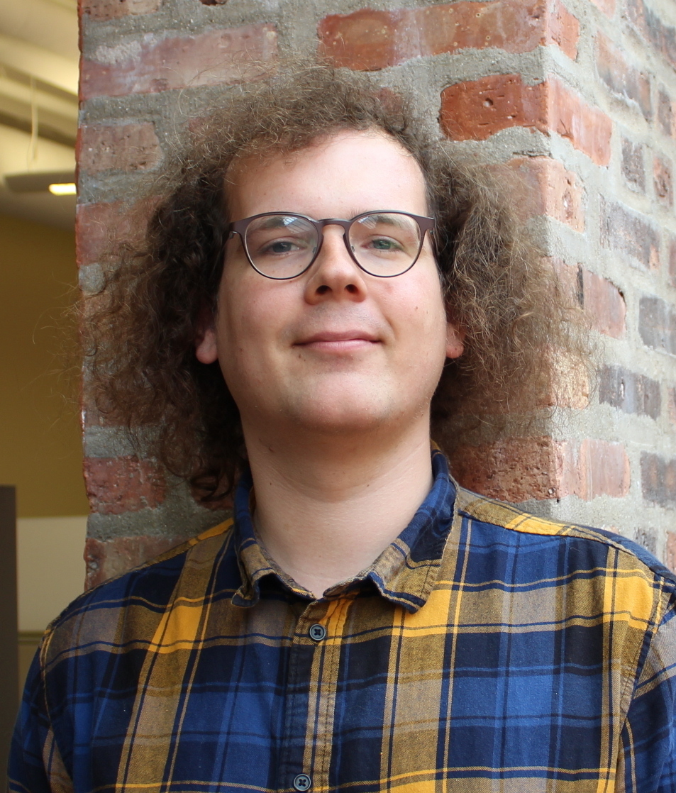

Dougal J. Sutherland
I'm a postdoc at the Gatsby Computational Neuroscience Unit at University College London, with Arthur Gretton.
My research interests include:
- Learning and testing on sets and distributions: two-sample tests, distribution regression/classification/outlier detection.
- Approximate kernel embeddings, e.g. random Fourier features.
- Active learning, especially in nonstandard settings like searching for large-scale patterns.
Before Gatsby, I was a Ph.D. student at Carnegie Mellon University, working with Jeff Schneider on machine learning. See also: my Swarthmore page with info about stuff I did in undergrad, various code on github, and my crossvalidated/stackoverflow profiles.
Publications
Below, ** denotes equal contribution.
Preprints
Generative Models and Model Criticism via Optimized Maximum Mean Discrepancy.
Submitted to ICLR 2017.
Understanding the 2016 US Presidential Election using ecological inference and distribution regression with census microdata.
[arXiv]
[code, using this package]
Ph.D. thesis
Scalable, Flexible, and Active Learning on Distributions.
Computer Science Department, Carnegie Mellon University. September 2016.
Journal and Low-Acceptance-Rate Conference Papers
Dynamical Mass Measurements of Contaminated Galaxy Clusters Using Machine Learning.
The Astrophysical Journal (ApJ), 831, 135 (2016).
Linear-time Learning on Distributions with Approximate Kernel Embeddings.
AAAI 2016.
[arXiv]
Workshop version at
Feature Extraction: Modern Questions and Challenges, NIPS 2015.
Active Pointillistic Pattern Search.
AISTATS 2015.
Workshop version at
Bayesian Optimization workshop (BayesOpt), NIPS 2014.
A Machine Learning Approach for Dynamical Mass Measurements of Galaxy Clusters.
The Astrophysical Journal (ApJ), 803, 50 (2015).
Active learning and search on low-rank matrices.
KDD 2013.
Managing User Requests with the Grand Unified Task System (GUTS).
LISA 2012.
Technical Reports, Posters, etc.
List Mode Regression for Low Count Detection.
IEEE NSS/MIC 2016.
Deep Mean Maps.
[arXiv]
Finding Representative Objects with Sparse Modeling.
CMU 10-725 Optimization course project. (Best poster award.)
[pdf]
Kernels on Sample Sets via Nonparametric Divergence Estimates.
[arXiv]
Grounding Conceptual Knowledge with Spatio-Temporal Multi-Dimensional Relational Framework Trees.
University of Oklahoma Artificial Intelligence and Robotics Technical Report #1138 (2012).
[pdf]
Integrating Human Knowledge into a Relational Learning System.
Swarthmore College B.A. thesis.
[pdf]